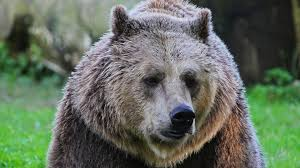

Oso pardo marsicano
 El oso pardo marsicano ( Ursus arctos marsicanus), una subespecie en peligro de extinción endémica de Italia, habita principalmente en los Apeninos centrales, especialmente en el Parque Nacional de Abruzzo, Lazio y Molise. Se estima que quedan entre 55 y 85 ejemplares.
Amenazas
Aparte del veneno, la persecución directa por tiros y trampas, la electrocución en tendidos eléctricos, la pérdida del hábitat y las molestias en las áreas de cría son las principales amenazas actuales para la especie.